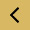

<!DOCTYPE html>
<!--
To change this license header, choose License Headers in Project Properties.
To change this template file, choose Tools | Templates
and open the template in the editor.
-->
<html ng-app="mojoTribe">
    <head>
        <title>Mojo Tribe</title>
        <meta charset="UTF-8">
        <meta name="viewport" content="width=device-width, initial-scale=1.0">
        <link href="MyFontsWebfontsKit.css" rel="stylesheet" type="text/css"/>
        <link rel="stylesheet" href="css/bootstrap.css">
        <link href="css/owl.carousel.css" rel="stylesheet" type="text/css"/>
        <link href="css/owl.theme.default.min.css" rel="stylesheet" type="text/css"/>
        <link rel="stylesheet" href="style.css">
        <script src="https://ajax.googleapis.com/ajax/libs/jquery/1.11.3/jquery.min.js"></script>
        <script src="js/bootstrap.js"></script>
        <script src="https://maps.google.com/maps/api/js?libraries=visualization,drawing,geometry,places"></script>
        
        <script src="https://ajax.googleapis.com/ajax/libs/angularjs/1.3.15/angular.min.js"></script>
        <script src="//cdnjs.cloudflare.com/ajax/libs/angular-ui-router/0.2.8/angular-ui-router.min.js"></script>
        <!-- ADDED SCRIPT ASHISH --->
        <script src="//ajax.googleapis.com/ajax/libs/angularjs/1.4.7/angular-animate.js"></script>
        <script src="js/ui-bootstrap-tpls-0.14.3.min.js" type="text/javascript"></script>
       
        <script src="js/owl.carousel.min.js" type="text/javascript"></script>
        <script src="js/angular-owl-carousel.js" type="text/javascript"></script>
        <!-- END SCRIPT ASHISH --->
        <script src="js/app.js"></script>
        <script src="js/forum.js" type="text/javascript"></script>
        <script src="js/login.js" type="text/javascript"></script>
        <script src="js/trail.js" type="text/javascript"></script>
        <script src="js/dirPagination.js" type="text/javascript"></script>
        <script src="js/script.js" type="text/javascript"></script>
        <!--<script src="https://rawgit.com/allenhwkim/angularjs-google-maps/master/build/scripts/ng-map.js"></script>-->
        <script src="js/ng-map.js" type="text/javascript"></script>
        <!--[if lt IE 9]>
      <script src="https://cdnjs.cloudflare.com/ajax/libs/html5shiv/3.7.3/html5shiv-printshiv.js"></script>
      <![endif]-->
         <script>
//      angular.module('ngMap').run(function($rootScope) {
//        
//      });
    </script>
    </head>
    <body>


        <!-- View for route provider -->
        <div class="container-fluid" ui-view></div>
        <!-- ng-view ends here-->

        
        
<!--            <script>
            $(document).ready(function () {
                
                $('.owl-carousel').owlCarousel({
                    loop: true,
                    margin: 10,
                    responsiveClass: true,
                    //navigation:true,
                    nav: true,
                    //navText: ["",""]
                    navText: [
                        "", ""],
                    responsive: {
                        0: {
                            items: 1,
                            // nav: true
                        },
                        600: {
                            items: 2,
                            ///nav: false
                        },
                        1000: {
                            items: 4,
                            // nav: true,
                            loop: false,
                            margin: 20
                        }
                    }
                });
               
            });
        </script>-->
    </body>
</html>